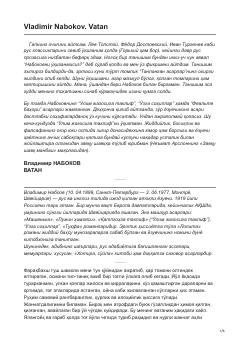

VVatan sog'inchi va insoniy kechinmalar haqidagi ta'sirli hikoya.
Ushbu asar mashhur yozuvchi Vladimir Nabokovning ijodiga mansub bo'lib, unda insonning o'z vataniga bo'lgan sog'inchi, xotiralar va ruhiy kechinmalar badiiy tilda tasvirlanadi. Muallif o'ziga xos uslubda inson qalbining tubidagi dard va orzularni farishtalar obrazi orqali ochib beradi.